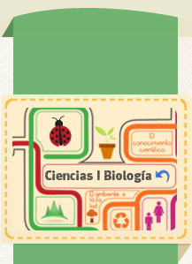

Bloque 4
1.- Hacia una sexualidad responsable, satisfactoria y segura, libre de miedos, culpas, falsas creencias, coercion, discriminacion y violencia.
2.- Biodiversidad como resultado de la evolucion: relacion ambiente, cambio y adaptacion
3.- Interacciones entre la ciencia y la tecnología en la satisfaccion de necesidades e intereses
Proyecto: Hacia la construcción de una ciudadanía responsable y participativa (opciones)*
Temario Bloque 4